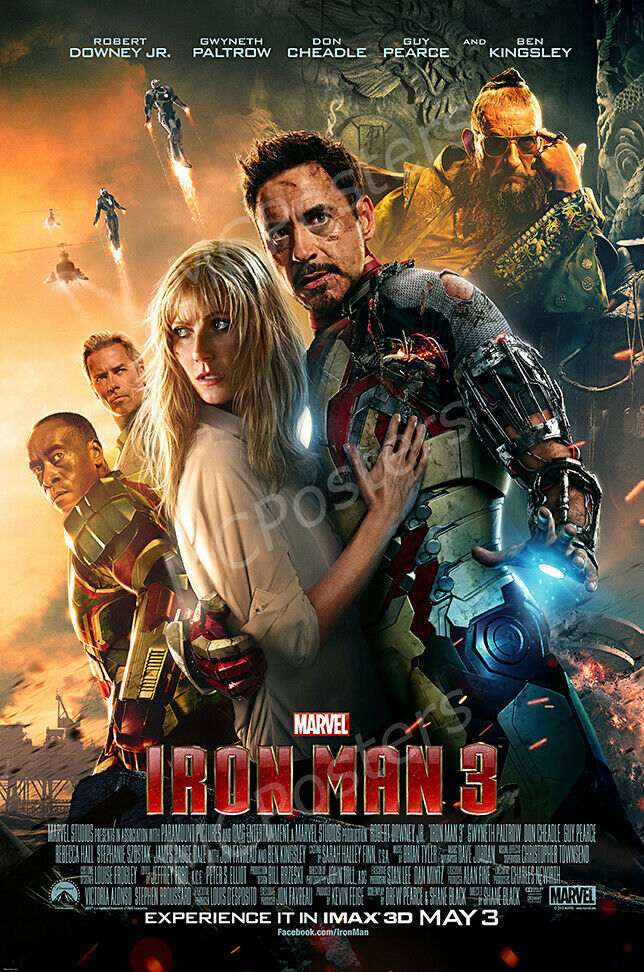

«Залізна людина 3» (англ. Iron Man 3) — художній фільм режисера Шейна Блека, заснований на однойменних коміксах видавництва Marvel Comics. Фільм став третім «власним» в серії фільмів про супергероя Залізну людини, четвертим, в якому Старк бере активну участь як герой, і сьомим у рамках кінематографічного всесвіту Marvel, фільми яких об'єднує загальна сюжетна лінія. Головну роль, як і в попередніх частинах, зіграв Роберт Дауні-молодший. Сукупно фільм зібрав $1,214,692,272, при бюджеті у $200 млн.
У Швейцарії 1999 року Молодий Тоні Старк на новорічній вечірці знайомиться з дівчиною на ім'я Майя Гансен, яка винайшла «Екстреміс» — технологію регенерації тканин. На шляху в номер Майї пара зустрічає Олдріча Кілліана — ученого-інваліда та ярого прихильника діяльності Тоні, який запрошує їх обох у свою компанію А. І. M. (Агентство Інноваційної Механіки). Старк призначає йому зустріч на даху, але не приходить, бо проводить ніч з Майєю. За обман Кілліан, що простояв на даху всю ніч, переймається ненавистю до мільярдера. У сучасності Тоні мучать кошмари і тривога після вторгнення інопланетян в Нью-Йорку. Через це він створює безліч нових костюмів, включаючи модель Mark 42 — автономний бронекостюм, керований дистанційно. Поведінка Старка вносить напруженість у його відносини з Пеппер Поттс. Продовжуючи керувати компанією Старка, Пеппер несподівано зустрічає видужалого Кілліана, який пропонує співпрацю. Вона відмовляється, вважаючи, що його розробки можуть стати зброєю. В цей час міжнародний терорист, який називає себе Мандарином, влаштовує серію вибухів невідомої природи, спрямованих проти США. В результаті одного з них впадає в кому Геппі Хоган, який займає посаду начальника служби безпеки Старк Індастріз. Розлючений Старк кидає виклик Мандарину по телебаченню. Терорист не зволікає, відповівши атакою озброєних ракетами вертольотів на особняк Тоні. Пеппер і Майя Гансен, що прийшла з попередженнями незадовго до нападу, рятуються завдяки тому самому Mark 42, в який Тоні одягнув Пеппер дистанційно. Як тільки жінки опинилися в безпеці, Старк в костюмі дає відсіч нападникам. Та під уламками особняка він падає в море і всі вважають його загиблим. Джарвісу вдається врятувати Старка і запрограмувати його костюм на політ до містечка в штаті Теннессі. Саме туди супергерой планував відправитися перед нападом, щоб розслідувати один з терактів Мандарина. Отямившись, Старк дізнається, що заряду костюма не вистачає для зворотної подорожі. Він добирається до найближчого будинку, де зустрічає 10-річного хлопчика Гарлі, який показує Тоні місце вибуху. Старк виявляє, що всі ці вибухи були наслідком впливу на людей Екстреміса, нестабільність якого може викликати потужний вибух. Агенти Мандарина — колишні військові, які отримали суперздібності від Екстреміса, атакують Старка, але той перемагає їх і без свого костюма. Джарвіс відстежує Мандарина до його штабу в Маямі, куди Тоні проникає за допомогою зібраної ним імпровізованої зброї. Там він знаходить Мандарина, але той виявляється актором-наркоманом, найнятим Кілліаном для ролі міжнародного злочинця. Вчений використовував розробки Майї Гансен, щоб вилікувати ветеранів-інвалідів, отримавши тим самим армію суперсолдатів. Старка захоплюють у полон, і Олдріч демонструє, що це він викрав Пеппер Поттс і піддав її дії Екстреміса, щоб змусити Тоні виправити нестабільність препарату. Лиходій вбиває Майю, коли вона намагається перешкодити йому. У цей же час друг Тоні полковник Джеймс Родс, що став урядовим супергероєм Залізним патріотом, розшукує Мандарина за дорученням президента. Але його захоплює Ерік Савін, помічник Олдріча, щоб заволодіти його костюмом і викрасти президента США. Старк втікає з полону з допомогою власного костюма, який все-таки зарядився, і об'єднується з Родом, щоб перешкодити Савіну викрасти президента. Залізній людині вдається вбити Савіна, але не запобігти викраденню. Тоні й Родс прибувають на базу лиходія, де той планує стратити президента в прямому ефірі, і замінити його віце-президентом, який співпрацює з Олдрічем заради зцілення доньки. Старк дистанційно викликає всі свої костюми, керовані Джарвісом, якими атакує терористів. Родс визволяє президента, а Тоні вступає в сутичку з Олдрічем, що використовує свої пірокінетичні здібності від Екстреміса. В ході битви Пеппер падає прямо в центр вибуху. Залізна людина ловить лиходія в пастку всередині свого костюма Mark 42, який підриває. Незважаючи на це Кілліан виживає і оголошує, що є істинним Мандарином, проте в цей момент з'являється Пеппер, яка вижила завдяки регенерації від Екстреміса, і кидає в лиходія бомбу, яка розриває Кілліана на шматки. Після перемоги Старк знищує всі свої костюми, виліковує Пеппер, дякує Гарлі, модернізуючи його майстерню в гаражі, а також зважується на операцію з витягання шрапнелі з грудей, яка змушувала його носити електромагніт. Він викидає більше непотрібний реактор в море, певний, що назавжди залишиться «залізною людиною», незважаючи ні на що. У сцені після титрів з'ясовується, що Тоні переказував усі ці події доктору Брюсу Беннеру, імітуючи сеанс психотерапії, але Брюс заснув незабаром після початку.
Фільм отримав позитивні відгуки: Rotten Tomatoes дав оцінку 78 % на основі 238 відгуків від критиків (середня оцінка 7,0/10) і 83 % від глядачів із середньою оцінкою 4,1/5 (145,968 голосів), Internet Movie Database — 7,8/10 (96 443 голоси), Metacritic — 62/100 (43 відгуки критиків) і 6,5/10 від глядачів (393 голоси).
«Людина-павук: Повернення додому» (2017)
«Месники: Війна нескінченності» (2018)
«Людина-павук: Далеко від дому» (2019)